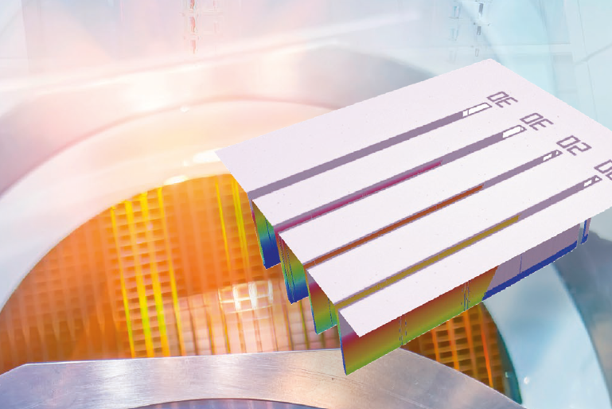
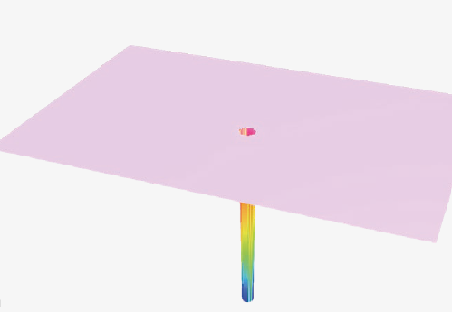
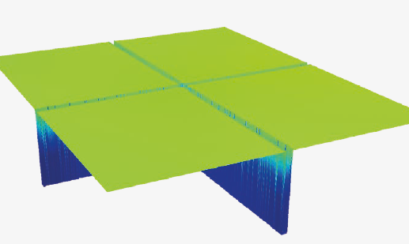
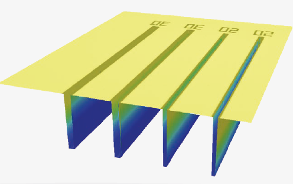
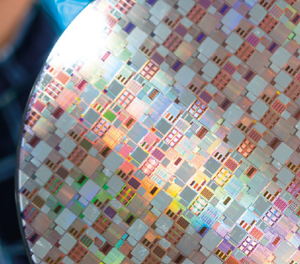

반도체·MEMS 공정의 TSV, 딥 트렌치, 다이싱 그루브— 기존 광학계가 측정을 포기하는 저반사·고종횡비 환경에서 백색광 간섭계 기반 방식으로 신뢰할 수 있는 3D 계측 데이터를 제공합니다.

고종횡비 (HAR)마이크로구조는 수직 깊이가 수평 폭보다 월등히 큽니다. 일반 광학 계측 장비는 구조 내부까지 빛을 충분히 전달하지 못하고, 반사광 회수율이 낮아 신뢰할 수 있는 측정 데이터를 얻기 어렵습니다.
Sensofar는 낮은 수치 구경 (NA)렌즈와 백색광 간섭계 (Interferometry)를 결합한 전용 측정 솔루션으로 이 한계를 극복합니다. 위상 (Phase)정보 기반 측정 방식은 저반사 환경에서도 안정적인 3D 형상 데이터를 일관되게 제공합니다.
낮은 NA 렌즈는 광선 입사각을 줄여 더 깊은 구조 내부까지 빛을 전달하고, 간섭계 방식은 반사 인텐시티 (Intensity)대신 위상 (Phase)차이로 높이를 계산하여 측정 신뢰도를 유지합니다.
반도체·MEMS 제조 공정에서 실제 적용된 고종횡비 측정 사례



공초점 (Confocal)방식은 반사 인텐시티 (Intensity)를 신호 기반으로 사용합니다. 깊은 구조에서 반사광이 감소하면 측정 신뢰도가 급격히 떨어지며, 고종횡비 환경에서는 측정 자체가 불가능해질 수 있습니다.
| 비교 항목 | 공초점 (Confocal) | 간섭계 (Interferometry) |
|---|---|---|
| 신호 기반 | 인텐시티 (Intensity) | 위상 (Phase) |
| 저반사 환경 | 취약 | 안정적 |
| 고종횡비 측정 | 제한적 | 적합 |
| 수직 분해능 | 배율 의존 | 배율 독립적 |
| 딥 트렌치 / TSV | 불안정 | 신뢰성 확보 |

Sensofar의 백색광 간섭계 기반 측정 방식은 저반사·고종횡비 환경에서도 안정적인 3D 데이터를 제공합니다. 인텐시티 (Intensity)가 아닌 위상 (Phase)으로 측정하기 때문에, 기존 광학계가 포기하는 구조에서도 신뢰할 수 있는 계측 결과를 얻을 수 있습니다.
sensofar.com